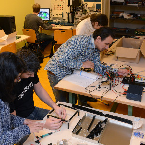

Guillaume J. Laurent

Teaching
- Robotics
- Computer Vision
- Computer science
- Optimization
- Neural networks
Robotique et vision
- Robotique industrielle
- Traitement et analyse d'images pour la vision industrielle
Informatique
- Algorithmique
- Introduction au génie logiciel
- Modélisation orientée objet avec UML
- Memento de C/C++ (avec Claude Jacquemard)
Optimisation et identification
- Optimisation sans contrainte de fonctions continues non linéaires
- Polycopié de cours [pdf]
- Supports de cours [pdf]
- Exercice 1 [pdf], exercice 2 [pdf]
- Sujet de TP avec la toolbox d'optimisation de Matlab[pdf] [zip]
- Sujet de TP avec la toolbox d'optimisation de C.T. Kelley [pdf] [zip]
- Identification des systèmes linéaires
- Modélisation et discrimination non linéaires à l'aide de réseaux de neurones formels
- Polycopié de cours [pdf]
- Exercice sur l'algorithme de rétropropagation [pdf]
- Sujet de TP/TDAO sur l'approximation de fonctions non linéaires [pdf] [zip]
- Sujet de TP/TDAO sur la reconnaissance de chiffres manuscripts [pdf] [zip]
- Sujet de TP/TDAO sur l'identification neuronale [pdf] [zip]